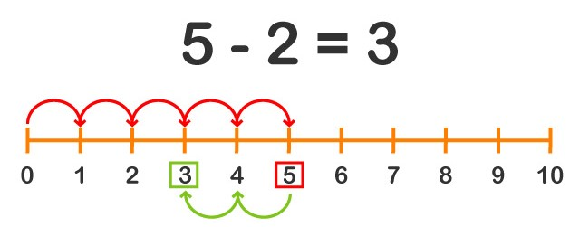

Restar es quitar una cierta cantidad a otra que ya teníamos
Veamos un ejemplo:
Si tengo 5 manzanas en una cesta, y quito 2, dentro de la cesta me
quedarán 3 manzanas. es decir que 5 menos 2 es igual a 3.
Como hemos visto con las sumas, también podemos usar la línea de números
para restar.
Por ejemplo:

Un pajarito hace 5 saltos y llega al número 5, luego hace 2 saltos hacia
atrás, y por lo tanto llega al número 3.
👉En una resta, el primero de los dos números que intervienen y es la
cantidad de la que debe restarse otra se llama MINUENDO. El segundo número
que debe restarse al primero se llama SUSTRAENDO.